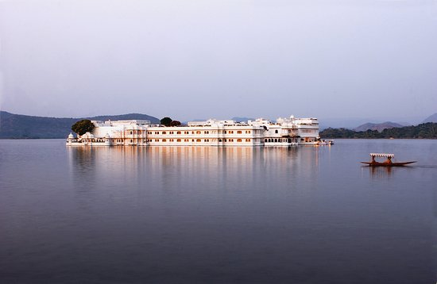
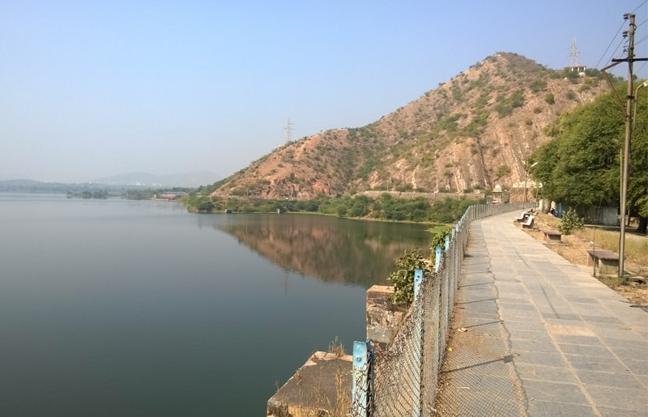
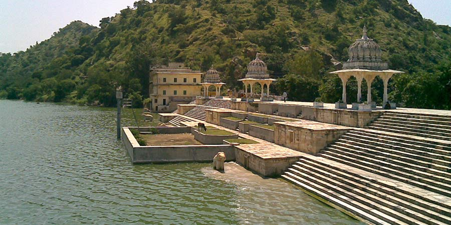
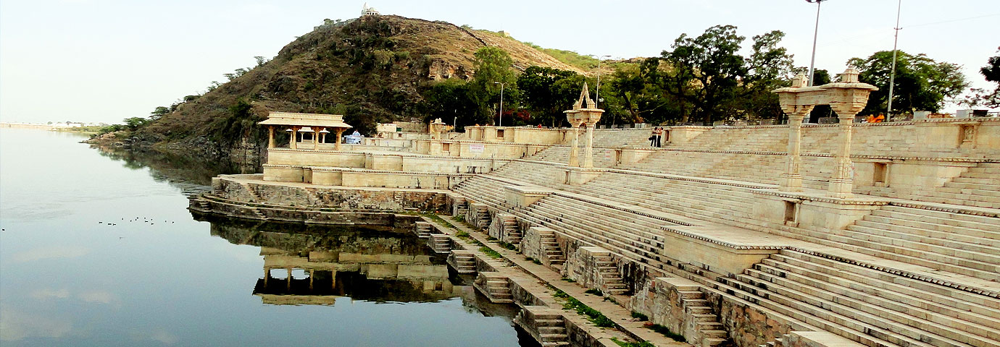
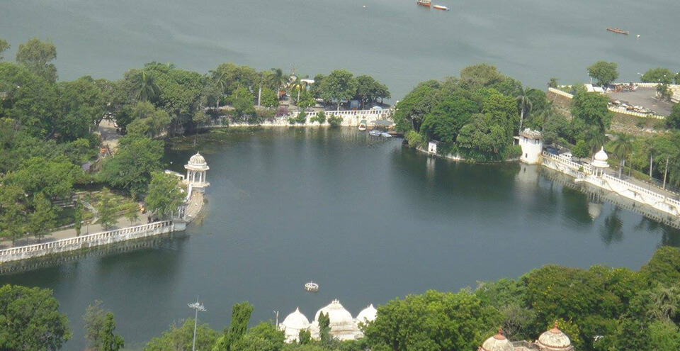
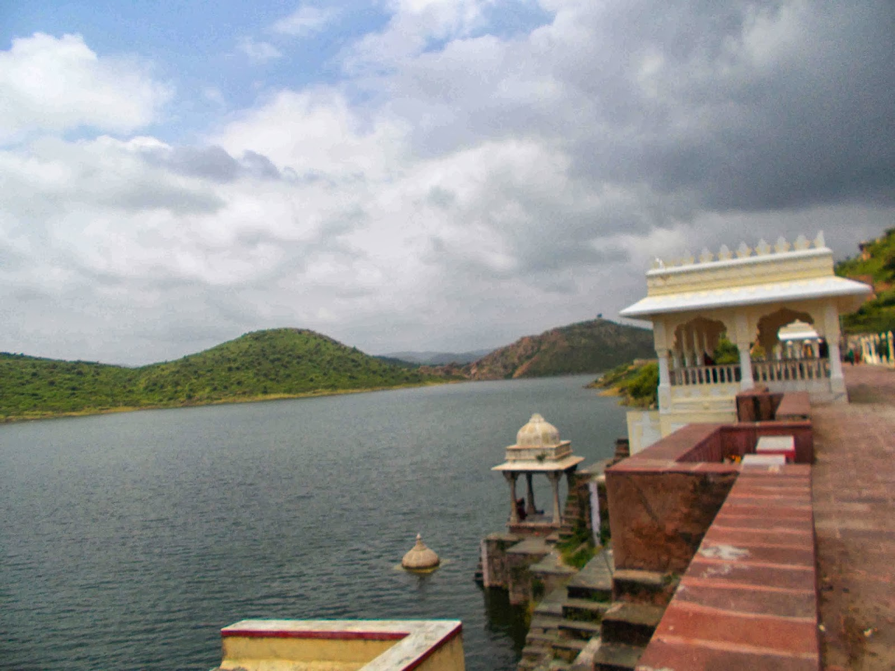
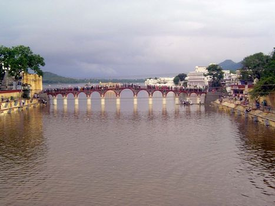

Fateh Sagar Lake

It is an artificial lake named after Maharana Fateh Singh of Udaipur and Mewar, constructed north-west of Udaipur.Within the confines of the Fatah Sagar Lake, there are three small islands; the largest of these is the Nehru Park, which is a popular tourist attraction, the second island houses a public park with an impressive water-jet fountain, and the third island is the address for the Udaipur Solar Observatory (USO). The Nehru park is accessible by inboard motor boats. The blue waters of the lake and the backdrop of the green mountains has given the soubriquet of ‘The Second Kashmir’ to Udaipur
Pichola Lake
Pichola Lake is one of the most beautiful and picturesque lakes of Udaipur.Located in the heart of the city, Pichola Lake is the oldest and one of the largest lakes of Udaipur.Talking about the dimensions of Pichhola Lake, it is extended to 3 miles in length, 2 miles in width and has depth of 30 feet. Lake Pichola comprises several islands. The world-famous Lake Palace is perfectly located on the Jag Island of this beautiful lake. Even the Jag Mandir, another popular and most famous Wedding destination, is located on an island of Pichola lake.A trip to Pichola Lake would be incomplete with a boat ride. At the time sun-set, a boat ride in this lake is sufficient to mesmerize anyone.
Udai Sagar Lake
Udaisagar Lake, one of the five prominent lakes of Udaipur,[1] is situated around 13 km in the east of Udaipur. This lake was built by Maharana Udai Singh in 1565. Udai Sagar Lake is around 4 km in length, 2.5 km in width and 9 meters deep at the maximum. The Udai Sagar Lake is approachable by road from the Udaipur City. Visitors can take Local buses, Tongas, auto-rickshaws and taxis to reach Udai Sagar. There is no entry ticket levied on visit to Udai Sagar.
Dhebar Lake
Dhebar Lake (also known as Jaisamand Lake) is India's second-largest artificial lake. It is 45 km from District headquarters of Udaipur. The lake has a total number of 3 islands measuring from 10 to 40 acres (160,000 m2) each. The Dhebar Lake Marble Dam is 300 Meters long and is a part of the "Heritage Monuments of India". The dam also has the Hawa Mahal Palace, winter Capital of the erstwhile Maharanas of Mewar. It covers area of 36 square miles.Dhebar Lake has elegant steps leading to the water and marble Chhatri on its bank with a small Shiv temple that marks the grace of the lake. On either side are the palaces built for the past kings favourite queens.
Rajsamand Lake
Rajsamand Lake is one of the five popular lakes of Mewar. Located 66 km in the north of Udaipur, Rajsamand Lake lies between the cities of Rajnagar and Kankroli. It is also known by the name of Rajsamudra Lake in Rajasthan. Rajsamand Lake was built by Maharana Raj Singh in 1660. On the southern end of the lake, the huge embankment is composed of white marble. It has marble terraces and stone steps that touch the waters of the lake. Also on the embankment of the lake are nine pavilions or 'nauchowki' (nine ghats),which were constructed by Maharana Raj Singh. These beautifully carved pavilions are festooned with pictures of the sun, chariots, gods, birds and detailed carvings. The history of Mewar is inscribed in 1017 stanzas, on 27 marble slabs, that are called the Raj Prasasti. It has been acclaimed as one of the longest etchings in India. At sunset, the waters of the lake glitter with the startling light of the sun.
Dudh Talai Lake
Doodh Talai is a small lake that adores the south-east direction of Pichola Lake. Located in the southern side of Shiv Niwas Palace, Dudh Talai contributes to the waters of Lake Pichola. This stream adds to the picturesque triangle in the company of Pichola on one side, Doodh Talai on the second and M.L. Verma Garden on the third. The Doodh Talai Lake is located very much near the center of the Udaipur City.[citation needed] It is around 24 km away from Udaipur Airport, and just 4 km from Udaipur City railway station and Udaipur City Bus Depot.Visitors can also take local Tongas, auto-rickshaws and taxis to reach Doodh Talai.
Jiyan Sagar (Badi Ka Talab)
Jiyan Sagar is another striking lake, located in the village of Badi. Built by Maharana Raj Singh, Jiyan Sagar was built to deal with the problem of famine in the area. The lake was named after Jana Devi, mother of Raj Singh. Jiyan Sagar is also known as Badi Ka Talab. It sprawls in an area of 155 sq. km. and the embankment of the lake extends to the length of 180 meters and width of 18 meters. Jiyan Sagar also adores three artistic kiosks (chattris).
Swaroop Sagar Lake
Swaroop Sagar is a small artificial lake that was created by Maharana Swaroop Singh. The lake was subsequently named after him. It is also known as Kumharia Talab. Located behind the famous Jagdish Temple, Kumharia Talab is near Chand Pol adjoining Rangsagar. The lake was actually built to provide water to the people of Udaipur. Kumharia Talab is connected with Lake Pichola and Fateh Sagar Lake.